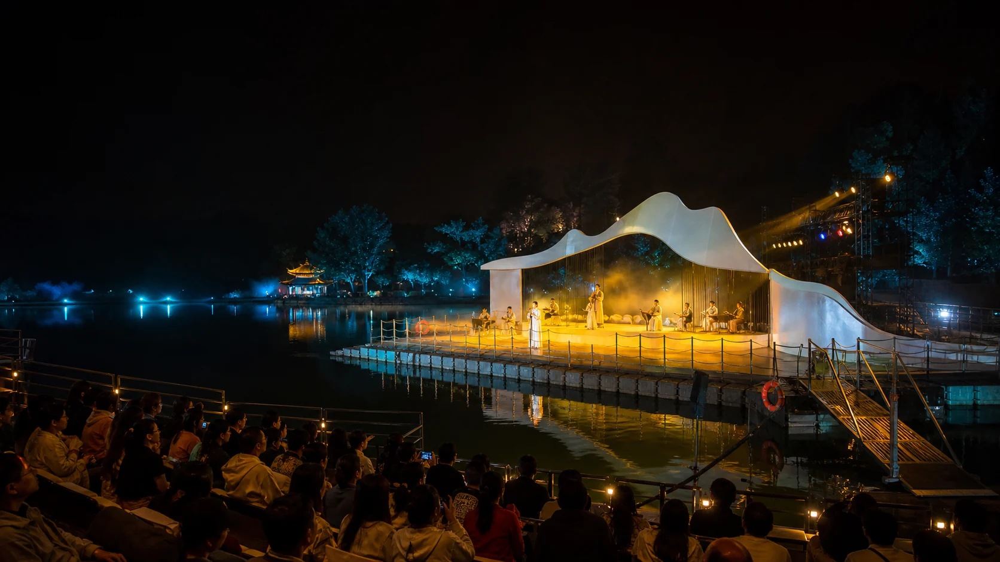
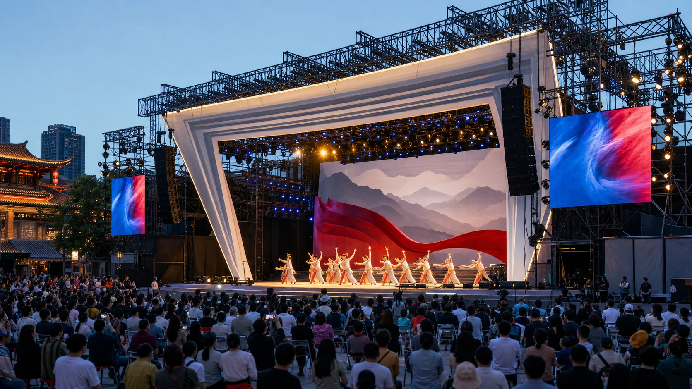
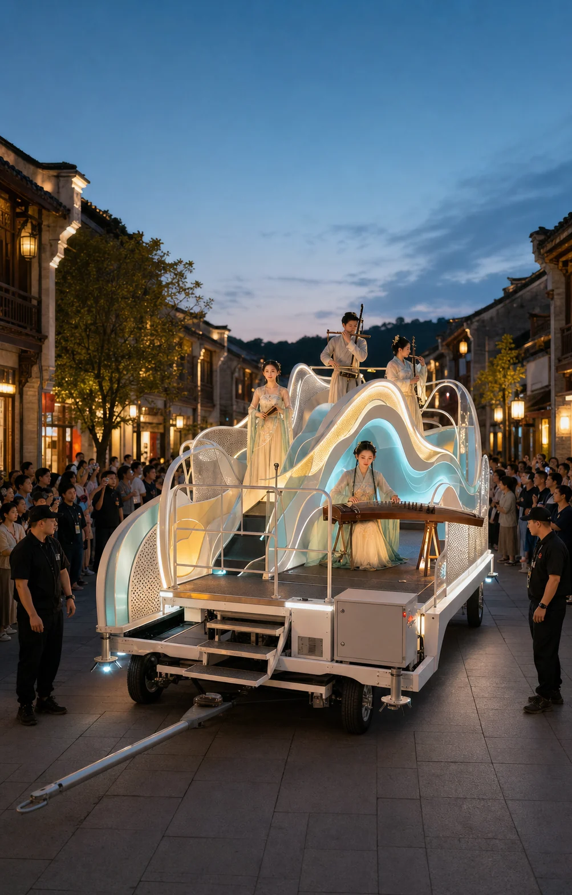
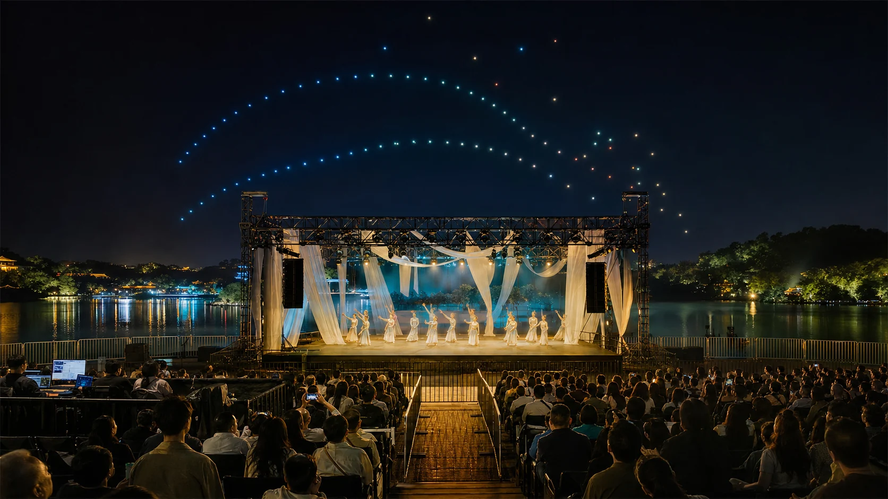

01 · WATER STAGE
湖面主秀
把浮台、岸线观众、锚泊、水位变化、岸电和维护通道组织成完整演出界面。
STAGE INSTALLATIONS
为湖面夜游、节庆演出、移动巡游和驻场主秀组织舞台结构、视觉装置、灯光节目与演出动线。先解决看得见、演得顺、切得稳，再追求声势。

一场演出的视觉中心必须服从真实观演角度。舞台高度、演员出入口、设备遮挡、吊挂受力、紧急疏散与节目切换共同决定现场效果，不能只按正面效果图推导。
PERFORMANCE FORMATS
以下图像为方案方向展示。编队数量、航时、通讯范围和气象边界，以设备配置、水域测绘、管理要求与现场测试为准。
把浮台、岸线观众、锚泊、水位变化、岸电和维护通道组织成完整演出界面。

兼顾大客流视线、真实桁架吊挂、设备防护、快速搭建与演出结束后的撤场。

从车辆底盘、转弯半径、道路净空和演员防护出发，设计可行进的表演装置。

用统一时间码连接地面灯光、舞台演出与空中编队，同时保留独立中止和降级模式。

SHOW CONTROL METHOD
舞台、灯光、音频、水面装置和空中编队必须拥有各自的运行与中止逻辑。联排用于合成节奏，不应该代替单系统测试。
DELIVERABLES
具体交付根据场地审批、设备责任、演出制作与运营团队分工书面确认。
观演关系、主视觉、演出段落、灯光气氛与画面层级。
结构、吊挂、浮台、设备位置、供电通讯与检修动线。
灯光程序、音乐时间码、联动逻辑与故障降级预案。
工厂预演、现场安装、单系统测试、联排与交接培训。
START A SHOW
请提供场地平面、观众容量、舞台或水域尺寸、演出时长、计划日期、预算范围和审批进度。涉及无人系统时，还需确认起降、水域、气象与管理条件。